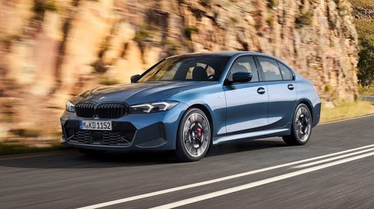
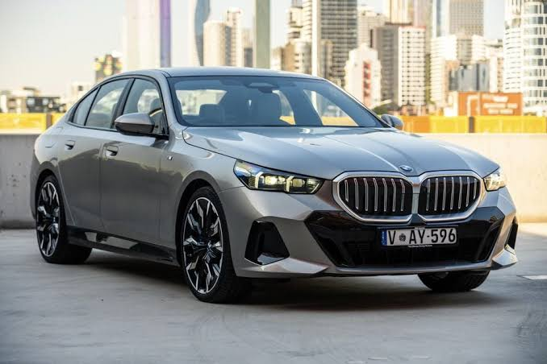
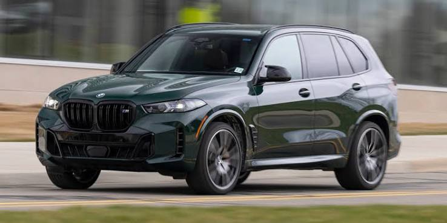

Сводная таблица характеристик
| Характеристика | BMW 3 Series | BMW 5 Series | BMW X5 |
|---|---|---|---|
| Тип двигателя | Бензиновый 2.0T / 3.0T | Бензиновый 2.0T / Дизель 3.0D | Бензиновый 3.0T / Mild Hybrid |
| Расход топлива | ~7.5 л/100 км (смеш.) | ~6.4 л/100 км (520i) | ~9.3 л/100 км (смеш.) |
| Тип КПП | Автоматическая 8-ст. Steptronic | Автоматическая 8-ст. Steptronic | Автоматическая 8-ст. Steptronic |
| Количество передач | 8 | 8 | 8 |
| Габариты (Д×Ш×В) | 4709 × 1827 × 1442 мм | ~5060 × 1900 × 1515 мм | 4935 × 2004 × 1765 мм |
| Объём багажника | 480 л | ~520 л | 650 л (до 1870 л) |
| Разгон 0–100 км/ч | 4.4 сек (330i xDrive) | 7.5 сек (520i) | ~5.3 сек (xDrive40i) |
| Максимальная скорость | 253 км/ч | 230 км/ч | ~243 км/ч (ограничена) |
| Тормозная система | Дисковые вентилируемые (перед/зад) | Дисковые вентилируемые (перед/зад) | Дисковые вентилируемые (перед/зад) |
| Wi-Fi / Bluetooth | Есть / Есть | Есть / Есть | Есть / Есть |
| Гарантия | 5 лет / без ограничения км* | 5 лет / без ограничения км* | 4 года / 50 000 миль** |
| Начальная цена | от $50 000 | от $116 900 | от $66 300 |
| * Данные для рынка Австралии. ** Данные для рынка США. Цены ориентировочные, актуальны на 2026 год. | |||
BMW 3 Series (G20 LCI)

BMW 3 Series — доступен в обновлённой версии. Базовая комплектация 330i xDrive оснащается 2.0-литровым TwinPower Turbo (255 л.с.) и 8-ступенчатым автоматом Steptronic.
Системы безопасности BMW 3 Series
- ABS, EBD, Brake Assist
- Dynamic Stability Control (DSC) с Dynamic Traction Control
- Frontal Collision Warning с автоматическим торможением
- Lane Departure Warning
- 6 подушек безопасности (фронтальные, боковые, шторки)
- Rear-view Camera, Parking Assistant
Рейтинг краш-теста Euro NCAP
«3 Series остаётся эталоном среди компактных спортивных седанов. Управляемость и баланс — на высоте.»
BMW 5 Series (G60)

BMW 5 Series восьмого поколения (G60) представлен . 520i оснащается 2.0T + 48V mild hybrid, 208 л.с., разгон до 100 км/ч — 7.5 сек.
Системы безопасности BMW 5 Series
- ABS, EBD, Brake Assist, Cornering Brake Control
- Forward Collision Warning с вмешательством в тормоза
- Rear Collision Prevention, Post Collision Braking
- Curtain Airbags, фронтальные и боковые подушки
- Bluetooth Extended, Wireless Charging
- Lane Departure Warning, High Beam Assist
Рейтинг краш-теста Euro NCAP
«5 Series стал тише, комфортнее и технологичнее. Он ближе к 7 Series, чем когда-либо.»
BMW X5 (G05 LCI)

BMW X5 — флагманский SUV среднего размера. xDrive40i оснащён 3.0-литровым рядным шестицилиндровым двигателем (375 л.с.) с 48V mild hybrid. Расход — до 25 MPG (комб.) [citation:3].
Системы безопасности BMW X5
- ABS, Brake Assist, Automatic Emergency Braking
- Blind Spot Monitor, Rear Cross Traffic Alert
- Lane Departure Warning, Stability Control
- Backup Camera, Rain Sensing Wipers
- WiFi Hotspot, Bluetooth, Apple CarPlay / Android Auto
- Автоматическое торможение при столкновении
Рейтинг краш-теста (NHTSA / Euro NCAP)
«X5 по-прежнему задаёт стандарты в классе: мощные двигатели, роскошный салон и отличная управляемость для своих размеров.»
Мини-сравнение по безопасности (div + таблица)
Ниже — упрощённое сравнение по трём ключевым критериям. Для наглядности используется обёртка <div> и компактная таблица.
| Критерий | 3 Series | 5 Series | X5 |
|---|---|---|---|
| Подушки безопасности | 6 | 6+ | 6+ |
| ABS + ESP | ✅ | ✅ | ✅ |
| Предотвращение столкновений | ✅ | ✅ | ✅ |
| Wi-Fi / Bluetooth | ✅ / ✅ | ✅ / ✅ | ✅ / ✅ |